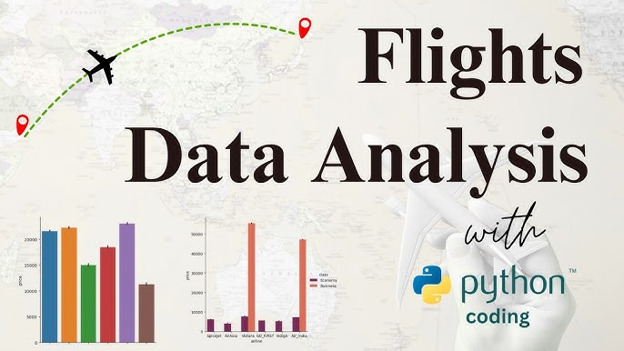

Cleaned, analyzed, and visualized personal Fitbit data to reveal actionable trends in activity, sleep, and heart rate patterns.
Analyzed personal Fitbit data to uncover patterns in physical activity, sleep, and heart rate using Python libraries such as Pandas, Matplotlib, Seaborn, and NumPy. Extracted actionable insights on daily activity trends, sleep quality, and correlations between exercise and heart rate, demonstrating the power of data-driven wellness tracking.


Leveraging Python, this analysis of Netflix data identifies key streaming trends and user preferences. The insights gained can inform content strategy, viewer engagement, and data-driven decision-making.

This project analyzes Coca-Cola sales data to identify key trends, seasonal patterns, and regional performance. Using Python for data cleaning, visualization, and statistical analysis, it delivers actionable insights to optimize sales and marketing strategies.

This project applies unsupervised machine learning to segment an image into dominant color regions.
The key techniques include:
Image Preprocessing: Resized the image and converted it into a NumPy array for pixel-level analysis.
Reshaping & Feature Extraction: Transformed pixel data into a 2D feature space (R, G, B values).
K-Means Clustering: Applied clustering (k=5) to group pixels by similar colors.
Image Reconstruction: Replaced each pixel with its cluster centroid to generate a segmented image.
Visualization: Used matplotlib to display the original and segmented images side by side.

This project analyzes US credit data to predict financial health, identify risk factors, and segment customers based on credit behavior. Using Python for data cleaning and ML modeling, and Tableau for interactive visualizations, it delivers actionable insights for financial decision-making.

This project combines airline passenger satisfaction analysis and airline route & fare analysis using Python and Machine Learning.
This project applies EDA, classification (Random Forest), regression (Linear Regression), and feature importance analysis to extract insights on passenger satisfaction and airline pricing strategies, offering actionable recommendations for service improvement and fare optimization.

Leveraging NLP and Python, this analysis predicts BBC news categories by extracting meaningful features from text data. The project demonstrates skills in text processing, modeling, and predictive analytics for real-world textual datasets.